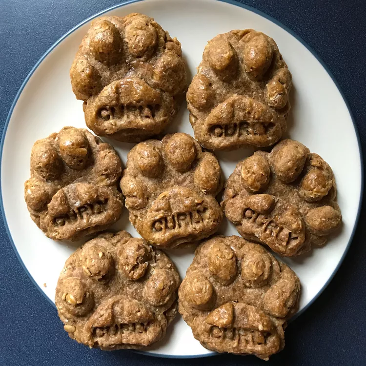

Peanut Butter & Banana Doggie Bikkies

Description
Fun-looking recipe for peanut butter and banana biscuits for good dogs
Ingrediets
- 1 egg
- ⅓ cup peanut butter
- ½ cup mashed banana
- 1 tablespoon honey
- 1 cup whole wheat flour
- ½ cup wheat germ
- 1 egg white, lightly beaten, for brushing
Instructions
- Preheat oven to 150°C. Lightly grease baking sheet.
- Stir together the egg, peanut butter, banana, and honey in a medium bowl; blend thoroughly.
- Stir in the flour and wheat germ; mix well.
- Turn dough out onto a floured board and roll to 1/4 inch thick.
- Cut into desired shapes with a cookie cutter, place on prepared baking sheet, and brush tops with egg white.
- Bake biscuits until dried and golden brown, approx 30 minutes.
- Once done, remove and cool on wire rack.